압축 프로그램에 필요한 모든 것
zip, 7z, rar, tar, iso 등 수십 가지 형식을 엽니다. zip, 7z, tar를 AES-256 암호로 만들 수 있습니다. 탐색, 검색, 파일 탐색기로 끌어서 꺼내기는 물론 압축 파일을 다른 형식으로 변환할 수도 있습니다. 원본은 직접 삭제할 때까지 남아 있습니다.
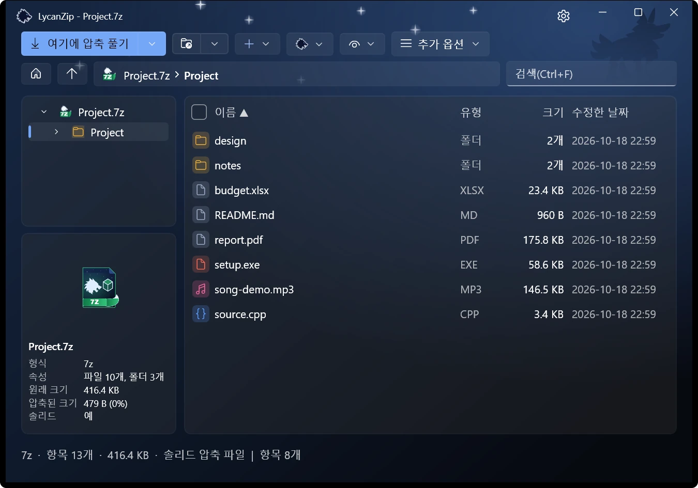
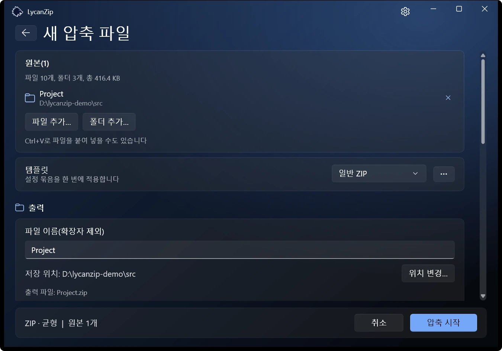
Windows 10 · Windows 11 전용
Zip, 7z, tar 등을 Windows 11다운 모습과 사용감으로. 무료, 오픈 소스, 광고 없음, 수집 없음.

1.1의 새 기능: 미리 보기 창, 읽기 모드, 암호 관리자, 압축 파일 형식 변환, 언어 5개 추가. 변경 내용 보기
zip, 7z, rar, tar, iso 등 수십 가지 형식을 엽니다. zip, 7z, tar를 AES-256 암호로 만들 수 있습니다. 탐색, 검색, 파일 탐색기로 끌어서 꺼내기는 물론 압축 파일을 다른 형식으로 변환할 수도 있습니다. 원본은 직접 삭제할 때까지 남아 있습니다.


Big5, GBK, Shift-JIS, EUC-KR 파일 이름을 쓰는 오래된 zip은 자동으로 감지합니다. 이런 압축 파일을 업그레이드하면 이름이 UTF-8로 저장되어 어느 PC에서나 올바르게 보입니다. 데이터는 그대로 복사됩니다.
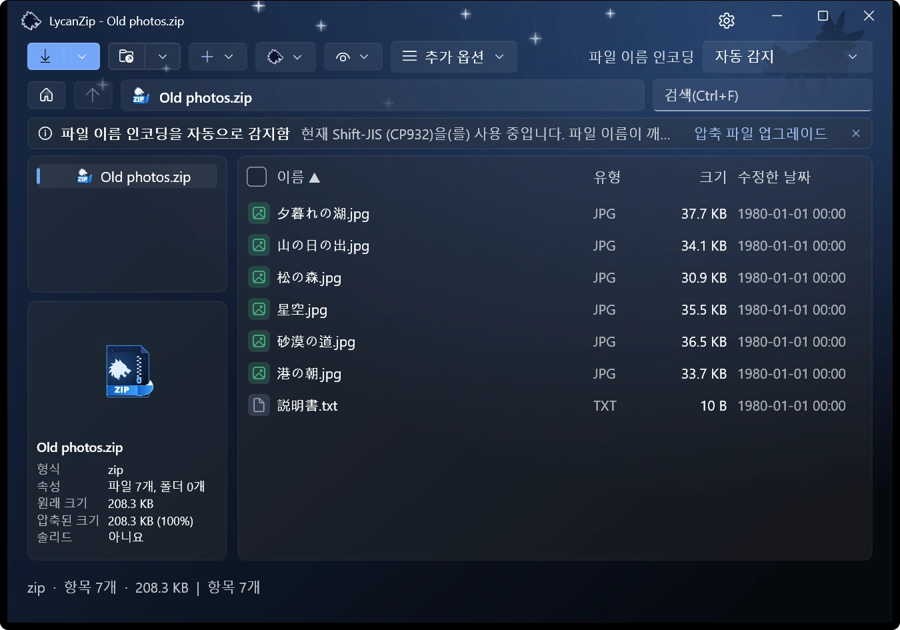
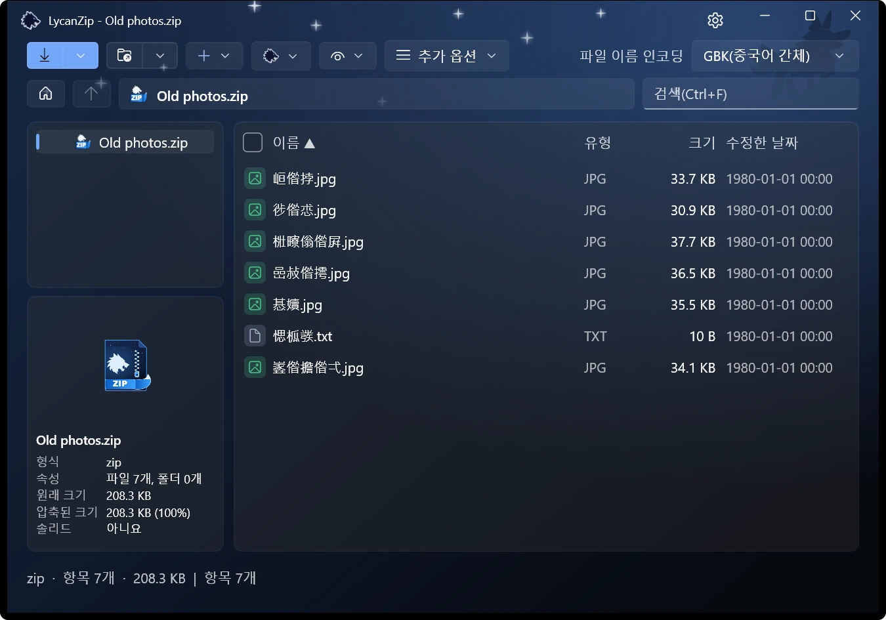
파일을 선택하면 미리 보기 창에 표시됩니다. 그림, 텍스트, PDF, 오디오를 지원합니다. 그림은 축소판 목록, 확대/축소, 애니메이션을 지원하는 뷰어로도 열 수 있고, 음악은 태그를 보여 주는 내장 플레이어로 재생합니다.
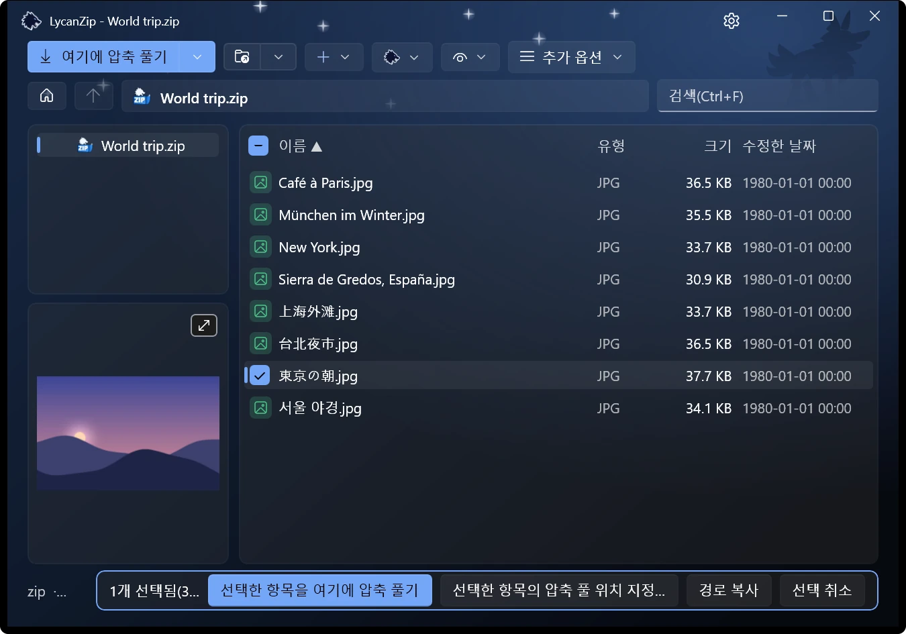
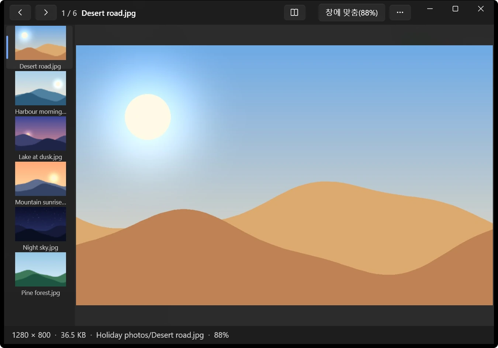
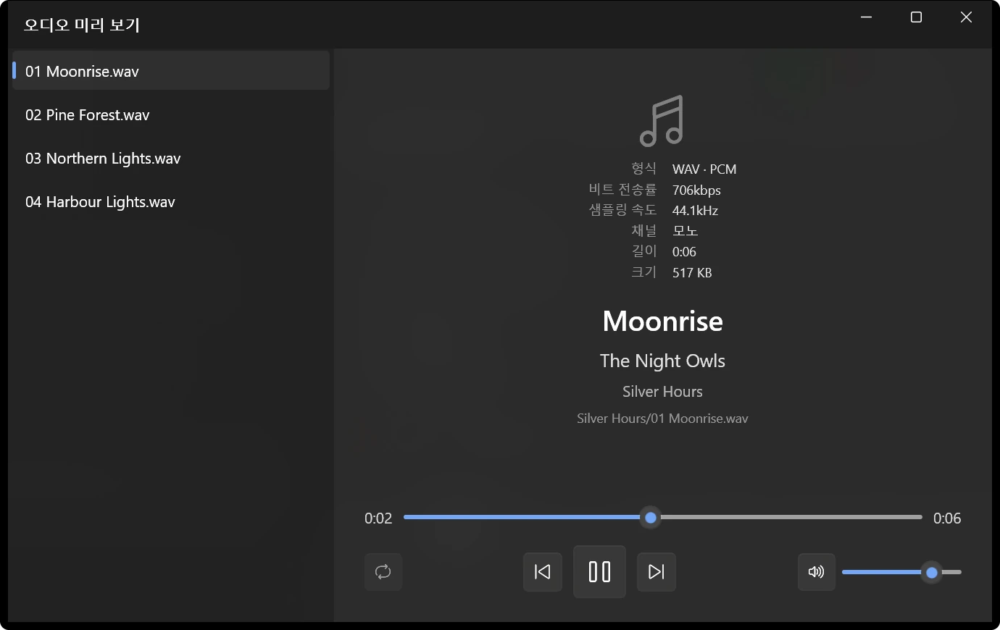
폴더를 넘나들며 책 한 권을 순서대로, 두 쪽을 나란히, 원한다면 오른쪽에서 왼쪽으로 읽습니다. 읽던 쪽은 책마다 기억합니다. .cbz, .cbr, .cb7, .cbt는 바로 이 모드로 열립니다.
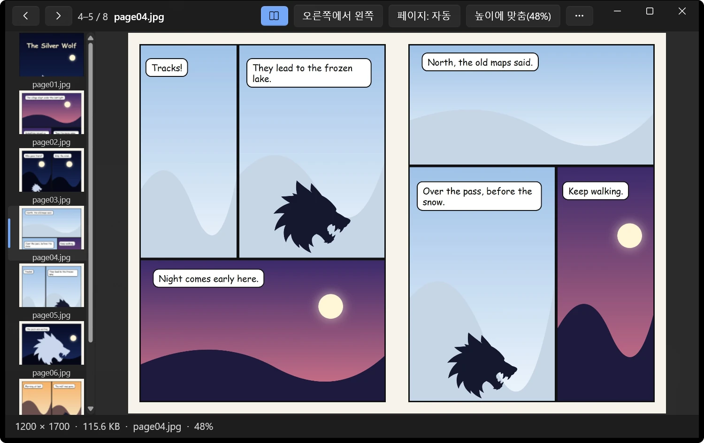
이번 세션에서 성공한 암호와 저장된 암호를 묻기 전에 먼저 시도합니다. 저장된 암호는 Windows 계정에 맞게 암호화되며 마스터 암호도 설정할 수 있습니다. 어디로도 전송되지 않습니다.
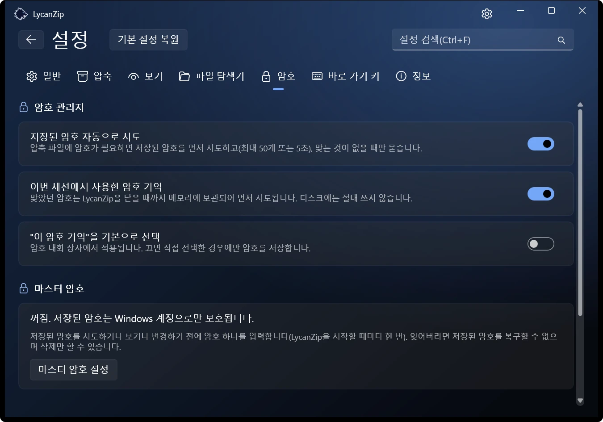
Windows 11 메뉴의 최상위에 바로 항목이 표시되어 “더 많은 옵션 표시”를 먼저 누를 필요가 없습니다. Windows는 이를 서명된 패키지에만 허용하므로 Microsoft Store 버전에서만 제공합니다. 다른 버전은 기존 메뉴를 사용합니다.
밝게 또는 어둡게, 여섯 가지 강조색, 또는 Windows 설정을 따를 수 있습니다. 효과음(2종)과 애니메이션은 끌 수 있습니다.
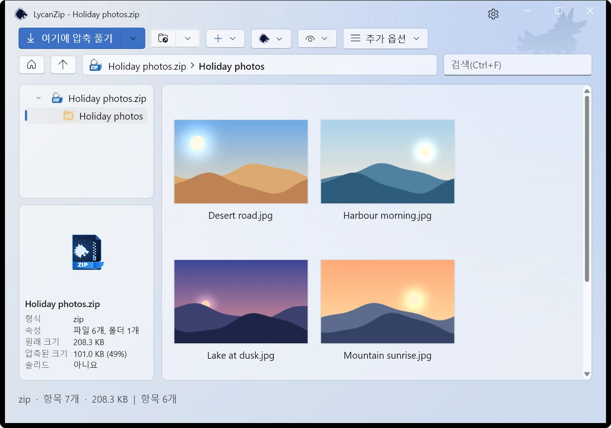
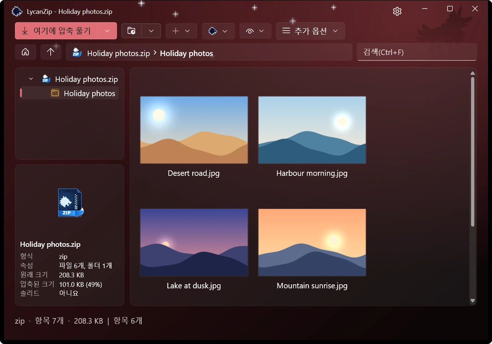
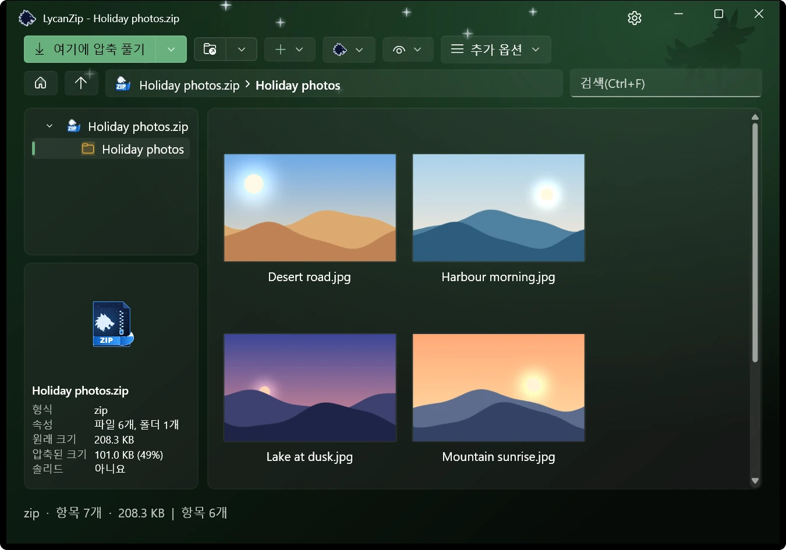
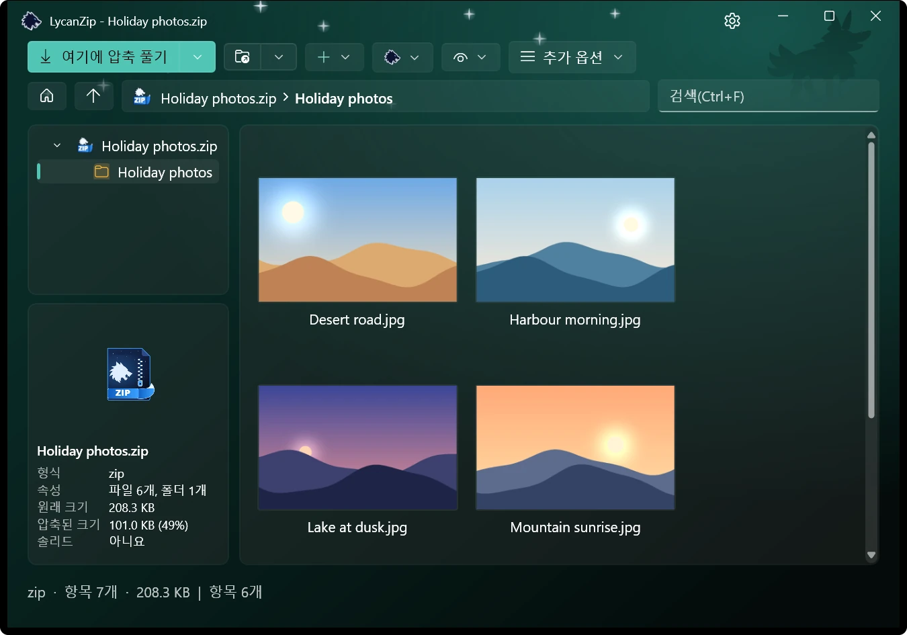
zip, 7z, tar 안에서 추가, 삭제, 이름 바꾸기, 바꾸기를 하거나, 사용하는 편집기로 파일을 고쳐 다시 저장할 수 있습니다. 안전한 복사본에서 작업합니다.
원격 분석 없음, 광고 없음, 수집 없음. 그리고 열기 전에 확인하는 세 가지 방법이 있습니다.
Windows AMSI를 통해 사용 중인 백신으로, 디스크에 풀지 않고 압축 파일을 검사합니다.
파일, 폴더, 압축 파일의 해시를 계산합니다. 두 번 클릭으로 .sha256 파일을 검증합니다.
클릭 한 번으로 해당 해시의 VirusTotal 페이지를 엽니다. 해시만 보내며 파일은 절대 보내지 않습니다.
위험한 경로는 거부하고, 링크는 따라가지 않으며, 압축 폭탄을 잡아냅니다.
영어, 중국어(번체), 중국어(간체), 일본어, 한국어, 독일어, 스페인어, 프랑스어.